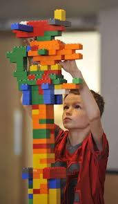
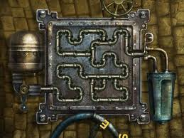
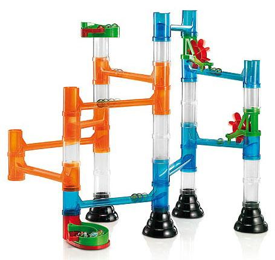
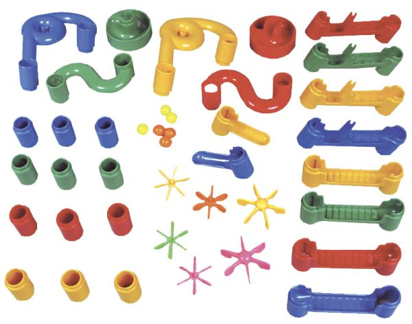

why count size, compare with sloc and other current ways of counting size, basic structure of code: language, program, operation, sizing up Hello World as an example, therefore compound operations and containers, still not found size of operations, therefore SSI, add viz as Lego blocks, size of sequence, size of if, add viz as pipes, size of loop, add viz of marble run, add viz about graphs, still not found size of operations other than if and loop, therefore go down one level, then infinite levels, therefore resolve that at asymptote of the turing machine all sizes are 1, therefore define that all we need is a relative "base", then back up to hello world picking the java language as the base and count size that way, then present comparison with sloc again, then introduce the "turing" as the size unit relative to any base, then answer questions about sizing 2 langs relative to a base, then talk about platform affordances, then talk about sizing up static data, then talk about static vs dynamic data, then move to engineering and the simple and exact ways of counting size.
The common sense description of size is:
Size: How big something is. Length, area and volume are typical ways of quantifying how big something is. When applied to code, this essentially means how much code there is; specifically excluding ideas like how complex it is, how fit it is for its intended purpose and so forth.
The most common real-world use of such a measure is estimation: when building new software or changing existing ones we like to estimate the effort involved. Is there a larger purpose, however - one that serves the practitioner and not just the manager?
I posit that size is one of those basic properties of code that aids in understanding and knowing code as well. We talk routinely of small, well designed codebases that can be understood and used easily; and also of large, unwieldy codebases that are difficult to understand. Wouldn't it be nice to quantify those subjective statements? A case might therefore be made that size is one of the "thing"s that we should understand about code. Also, note that the "small" and "large" parts mentioned above point to the size of the code and the "easy" and "difficult" parts point to its complexity; and certainly the two are related. So quantifying size might lead to understanding other "thing"s about code.
Let's first look at how size is measured currently. In my cursory review of the current state of affairs, there are two broad approaches to measuring size:
Here is a comparison of the pros and cons of these two approaches:
| Approach | Pros | Cons |
|---|---|---|
| Empirical |
|
|
Descriptive |
|
|
Obviously, neither approach seems comprehensive nor feels right. Wouldn't it be nice to have a measure of code size that:
That's what I'd call a natural measure of software size. The rest of this chapter is an attempt to build one. My approach is part engineering, part science: I'd like to develop a theory that is general enough, but with sufficient focus on how to apply it to real world software.
Programs, in general, can be described as a set of instructions or operations to do a certain task. The set of instructions or operations that make up a particular program is a subset of the available instructions or operations, and this superset is usually called a language. I'll repeat these concepts as definitions so that they can be referred to later:
Language: A finite set of instructions or operations that can be used to write code.
All code is written in languages.
Operation: The smallest unit of independent code execution in a language.
It is the basis of size measurement because of its atomicity.
--(1)Or in BNF-ish syntax:
language := operation+
program := operation+ where operation belongs to language
operation := ....smallest unit of code exec....
--(2)... which only highlights the fact that while we have a definition for Operation, we're not really close to using it to actually measure things. However, if we knew how to size operations, this characterization seems to intuitively say that the size of a program is a summation of the size of the operations contained in it. In hand wavy formulas, this can be expressed as:
size(program) = sum(size(operation)) for all operations in the code
assuming
size(operation) = a known value --(3)This would be a nice result, but it still remains to be determined if size can indeed be characterized this way. This chapter will attempt to do just that.
Let's start by trying to size up the most common program of all - the Hello World program - and use that to refine our intuitive expectation of summing up sizes. For specificity, I'll use Java, but I'm using Java as an example of programming languages in general, not as the defining language for this theory. Here's Hello World in Java:
// program 1
public class HelloWorld{
public static void main(String[] args){
System.out.println("Hello World"); //line 1
}
}
// SLOC: 5, Size: ?So this is a program that weighs in at 5 SLOCs; but if we were to consider it as code instead of lines of text, what would its size be?
Now, if you're not a Java person, you're likely to complain that I chose a bad language to start with; and I'd almost agree. There's actually only one line of code in there - the one that prints the message; everything else is ceremonial structure. However, it does help expose the fact that code written in any language eventually has some superstructure; and in that sense Java's requirement to expose such structure is more useful for our size-measuring purposes than other languages' "hiding" of such structure "under the carpet", so to speak.
So, warts notwithstanding, let's see if we can use this example to examine the idea of code size. From line 1 alone, quite a few questions arise:
println() is it's not an actual language feature; it's a method in a library. Should we actually count its call as an Operation?If we factor in the rest of the program, more questions arise:
main()'s definition?Let's try to answer each question and form some opinions along the way.
Let's contrast Program 1 with some similar code that might flesh Qn #1 out better: Here's one contrasting program:
// program 2
import java.io.PrintStream;
public class HelloWorld{
public static void main(String[] args){
PrintStream outPS = System.out; // line 1.1
outPS.println("Hello World"); // line 1.2
}
}
// SLOC: 7, Size > Size(Program 1)?Aside: Note that Program 2's SLOC went up because
PrintStreamhad to be imported in, while Program 1 doesn't need that line because of "platform" affordances. More on such platform implications later.
Now, program 2 is admittedly contrived, but it's reflective of similar contrasts in real code where the latter representation would be useful [1]. It splits out the original line 1 into two, separating the individual steps involved and it does increase the size of the program even if with an "unnecessary" addition of a local variable; but it highlights the fact that System.out.println(...) is something more than atomic - it's a Compound Operation, if you will.
[1]: For e.g. where you'd split a long chain of method calls into an intermediary value for readability, but this increases size because now you have an additional variable
In fact, we could take it a step further and do this:
// snippet 2.1
PrintStream outPS; // line 1.1.1
outPS = System.out; // line 1.1.2
outPS.println("Hello World"); // line 1.2
// SLOC : 3, Size : ?Now it cannot be broken down anymore and therefore matches our definition of a Operation from above. So if we took the definition to heart and broke line 1 down this way, 3 "smallest possible" Java statements are required to make it. This means we have to recognize that some operations can be aggregates and add that as a definition:
Compound Operation: An operation that can be broken down into smaller operations within the Language's set of operations.
--(4)... and update the BNF-ish version (2) to include this fact:
language := operation+
program := operation+
operation := compound_op | simple_op
simple_op := ....smallest unit of code exec.... --(5)...and update formulas (3) to reflect this:
size(program) = sum(size(compound_op |simple_op)) for all operations in the code
size(compound_op) = sum(size(simple_op)) for all simple_ops that can replace the compound op.
assuming
size(simple_op) = a known value --(6)Are we done with Qn #1? Not quite; here's another version of the same program:
// program 3
public class HelloWorld{
public static void main(String[] args){
System.out.print("Hello ");
System.out.println("World");
}
}
// SLOC: 6, Size = Size(Program 2)?This program splits the final function call itself into two while still achieving the same end result. Clearly an operation can not only be broken into smaller bits, but what it does can also be broken into smaller bits. This hints at a couple of things:
While a library function itself is not a language feature, the ability to make a function call certainly is. A function call is essentially a shortcut to invoke a bunch of statements defined elsewhere; and supporting such a feature does require some effort on the language runtime's part. So Operation it is. In definition form again:
Defining and calling functions are Operations if the language supports it --(7)The size of the function itself (i.e., that of its body) should certainly be different from that of a call to the function. This answer highlights the fact that these two constructs - the definition of a function and the call to it - are two separate operations that a language supports. The definition is clearly a compound operation, but what about the call? If the language supports the concept of functions and calling them, the operation of calling a function has to be atomic, by definition. Updating the BNF-ish definitions, therefore:
operation := compound_op | simple_op
compound_op := function_def | ...other compound ops...
simple_op := function_call | ....other smallest units of code exec.... --(8)Onto Question #4.
At first sight, this question seems trivially answerable: line 1 in Program 1 is the only "working" Operation, so the others shouldn't have much importance. However, it becomes interesting when contrasted with other languages that do not necessarily need containers such as classes or a predetermined function like main. The same hello world in ruby (or Python), for example, would be:
# program 4
print "Hello World", "\n" #SLOC:1, Size: ?Note: Yes, I know that this is possible because of "Platform affordances" and that behind the scenes are some intelligent defaults. I also realize that this is not the same as Java's
System.out. As mentioned before, we'll deal with this "tip of the iceberg"-ness later.
Now it seems intuitive that the first program is "larger" than the second one, doesn't it? Or, to contrast in the other direction, what if we wrote our HelloWorld.java like so?
// program 5
public class HelloWorld{
public static void main(String[] args){
greet(); //line 1
}
public static void greet(){
System.out.println("Hello World"); //line 2
}
}
// SLOC: 8, Size: ?This (contrived) version of the code is obviously bigger than the previous - while doing the same thing as before.
So Q#4 really is: Does a language's container structures contribute to its size? Going by the examples above where they "add to the structure", I would argue that they do; and therefore should be considered "compound" Operations s with some non-zero size of their own. This also answers the question about main()' - and by extension - all functions: functions are containers and therefore have a non-zero size of their own in addition to contributing whatever size their contents have to the total size.
Updating definitions from (7) and (8) above to include these facts, therefore:
compound_op := class_def | function_def | ...other compound ops...
class_def := class_construct + class_contents
class_contents := method_def*, field*
method_def := function_def
field := operation
function_def := function_construct + function_contents
function_contents := operation+ --(9)and
size(compound_op) = size(function_def) | sum(size(simple_op)) for other compound ops.
size(class_def) = size(class_construct) + size(class_contents)
size(class_contents) = size(method) + size(field) for all methods and fields in the class
size(method) = size(function_def)
size(field) = size(operation)
size(function_def) = size(function_construct) + size(function_contents)
size(function_contents) = sum(size(operation)) for all operations in the function
--(10)Or more generally,
size(container) = size(container_construct) + size(contents)
size(contents) = sum(size(operation)) for all operations in container
--(11)Using (11) we can easily extrapolate to larger structures:
size(app) = size(app_construct) + sum(size(programs in app))
size(program) = size(program_construct) + sum(size(package|modules|classes|functions in program))
size(package|module) = size(package|module construct) + sum(size(classes|functions in module|package))
--(12)Looking at (11) above, however, how different is a container from another Atomic Operation in terms of contribution to size? Its presence adds to the total size just as another atomic operation and the formula above ensures that its contents' size is accounted for. As long as we retain the + sum(size(contents)) part, we could treat containers as some more atomic operations during analysis.
So how do we put some numbers against these ideas? We're slightly better off than before, but we still don't yet know to size the atomic operations, nor do we know the size of the containers themselves. All we have determined so far is: If we know the sizes of the operations and their containers, the overall size is an accumulation of individual sizes.
Ok, so Hello World helped us understand compound operations and containers, but didnt help much with understanding the nature and size of the operations. Maybe a program in a high level language is closer to the application of programming as opposed to its core.
Maybe we need to look at a simpler model of programming?
Let's try the simplest notion of code. All of programming has famously been depicted as being made of 3 basic operations:
IFLOOPLet's try sizing up each of these basic operations, starting with...
A Sequence is technically not an operation itself, but a string of them. Let's plod on, however, to see if we can glean something about operations from a collection of them. Let's write a simple Sequential program like "Print 5 superhero names". I'm going to switch to pseudo-code so that we can ignore all platform issues. Here's the program in a language that somewhat resembles assembly:
// program 6
print "Superman"
print "Batman"
print "Green Lantern"
print "Green Arrow"
print "Aquaman"
stop
// SLOC: 6, Size: 6* unitsSince we're at the same impasse of not knowing the sizes of operations, let's make some assumptions. Assuming the size of the print and stop operations are 1 unit, and using (3):
size(program6) = sum(size(5 print operations & 1 stop operation))
= 1* + 1* + 1* + 1* + 1* + 1*
= 6* units
(the * is to remind us that sizes being 1 is an assumption) --(13)... is 6* units. This is sort of similar to counting lines of code and fits our common sense notion that the code is "6 units long" or "6 units tall".
Would that be long or tall? Here's where a little physical analogy might help.

We talk all the time about "building" software and code building has long been equated to piling Lego blocks on top of each other. And when heavy code breaks it crashes very similarly to how a heavy Lego structure does. So let's equate size to height.
One break from the normal way of using Legos, though: code Legos are indeed stacked one block at a time, but by sticking each block under the one that's already in place, not on top. That way, program 6 gets built in the order we read it, not from the last statement upwards.
But that was just a Sequence. Let's try some ...
... by writing a simple program to check if 5 is odd or even. Again, in pseudo code:
// program 7
rem = 5 % 2
if rem == 1 then
print "5 is odd"
else
print "5 is even"
endif
stop
// SLOC: 7, Size: 5* sq. unitsThis program is not just tall, it is wide too. Until the if is encountered, things are linear, but at that point we could go one of two ways. This can be visualized as a "left+right" pair or a "down+side" pair, something like so:
// program 7 (alt view)
+----------------+
|rem = 5 % 2 |
+----------------+-------------------+
|rem == 1 ? | |
| true | false |
+----------------+-------------------+
|print "5 is odd"| print "5 is even" |
+----------------+-------------------+
|stop |
+----------------+So, what then, is the size of an if? The size of the main branch contributes to the length of the program it's in, while the size of the alternate branch can be considered as adding to the width of the program. It seems safe to say, therefore, that:
size(if) = size(condition check) + sum(size of individual branches)
= c + sum(b)
where
c = a non-zero size of the condition check
b = size(branch)
= 1 (width) x h (height of branch) --(14)Applying this to the if in program 7 and assuming the condition check is a size 1 (because there's only one comparison being done), we get:
size(program7's if) = size(condition check) + size(if branch) + size(else branch)
= 1* + 1 x 1* + 1 x 1*
= 3* sq. units --(15)To use this result in calculating Program 7's size, we've to represent all sizes as "areas" first. Assuming again that the print operation was 1 unit tall, we should add that it is 1 unit wide. Program 7's size(area) therefore becomes:
size(program 7) = sum(size(operations))
= size(assignment operation) + size(if) + size(stop)
- size(modulus op + assignment) + size(if) + size(stop)
Now assuming size(modulus op) = 1, we get
= 2* + 3* + 1* assuming the assignment operation is also of size 1.
= 6* sq. units, compared to a SLOC of 7. --(16)For completeness, let's convert Program 1's size to "area" units as well:
size(program 6) = 6* sq. units --(17)Note that program 7 has a SLOC of 7, but a size of 6* sq. units. Smaller numerically, but larger by size and semantics.
Does our Lego block analogy still hold up, though? The if requires data to be used, a decision to be made and one of (potentially many) alternate routes to be taken. This is probably best visualized as something "flowing" from one statement (i.e. block) to another, with control points to direct flow. Maybe pipes are a better analogy therefore?


Sorry I couldn't find better pictures, but hope these convey some part of the idea. Every time you see a T-junction or a Cross, think if operation; otherwise the flow of liquid represents the Sequence.
Unsatisfying as the pictures are, more so is the analogy. While data does flow from one operation to another, it doesn't flow like a liquid does. Data in a digital computer is discrete and better described as chunked than fluid. Is there a better physical analog? What we need is something that is built using standard parts (like Legos) and allows things to flow through them (like pipes) but only allows solid things.
Without further ado, I present:
 
... the marble run! It does everything we would like our physical analog of code to do and then some. It has the standard blocks that link together obviously (which is a slight difference - that the connectors are fixed to the blocks); but it also has "source" and "sink" pieces, pieces that change direction (not all of which are logically important) and even pieces that have some built-in logic. If you look closely you'll find that one of the purple pieces is a simple flip-flop (aka IF)- it sends successive marbles down alternate paths.
So it seems that the marble run is indeed a good choice as our physical analog for code. We will use it only as a mental model in our theory forming activity, but there are real world marble runs that have been created to do actual computations; so it's certainly an apt choice.
Ok, enough fun. Let's try the final operation ...
... by writing a simple loop to print 1 to 5. Again in pseudo code:
// program 8
loop i = 1 to 5
print i
end loop
stop
// SLOC : 4, Size: ?Written in this form, it seems like the loop is a short cut to write out a long sequence of operations. Indeed, program 8 can be rewritten as:
// program 8A
print 1
print 2
print 3
print 4
print 5
stop
// SLOC : 6, Size: 6* sq. unitsSuch "unfolding" of loops is not uncommon; and viewed this way we could conclude that a loop's primary size is its height, which is equal to the number of operations within the loop times the number of times those operations are looped around. Not all loops can be unfolded thus, however, as a simple example that uses a do-while loop or an infinite loop will attest. However, there's an alternate way to express a loop, presented below. This will work for any kind of loop including ones whose number of iterations cannot be determined up-front.
// program 8B
i=1
top: if not(i <= 5) // line 1
goto end
else
print i
i = i + 1
goto top // line 2
end if
end: stop
// SLOC : 9, Size : 7* sq. unitsNow the true nature of Iteration becomes obvious: Iteration = if + goto. The if sets up the conditions for iteration and the goto executes it. The goto is therefore the key ingredient in getting iteration to work, so let's try to understanding it a little better.
A goto is a route from one "block" to another, a connector. Program 8B has 2 obvious kinds of gotos and one that's not that obvious:
The Unconditional goto alters the flow of execution and skips ahead to another location, adding the "width" (or more generally, another dimension) to the program. If the destination of the goto is not local to the point of branch off, the impact on size is somewhat difficult to determine.
Conditional gotos remove some of that uncertainty by checking a condition before branching. Adding the check reduces the chance of an invalid target or that of "spaghetti code" - an unholy tangle of wild gotos that only makes sense when you write it.
However, conditional gotos only reduce the chance of indeterminate size, they do not eliminate it. For e.g., the goto end line in program 8B could lead to some location that is far away from the rest of the code. So the deciding factor for size of a goto is whether or not its destination is known. Let's call the ones with known, defined destinations like 'top of the loop' as _Bound Goto_s and the ones that are not such as _Unbound Goto_s. Their sizes, therefore, are:
size(bound goto) = 1* width x N height already counted elsewhere
= 1* width x 1* height
= 1* sq. units --(18)That is, the height of a bound goto exists, but it has typically been already considered as part a "larger structure", so only the contribution of the single goto "block" need be considered.
size(unbound goto) = G
where G = 1 unit height x G1 width or
= 1 unit width x G2 height --(19)That is, while we could measure one or more "dimensions" of the unconditional goto, there will always be one dimension that we cannot quantify and therefore its overall size remains an unknown quantity.
Finally, Implicit gotos: On the "main line" of code, implicit gotos guide the execution of code by stringing successive operations together. In fact the machine executing these programs (or any general computer, for that matter) can be thought of executing this meta-program:
// meta program 1
1: read a specific location for the address of the next instruction to execute
2: execute it
3: if step 2 didn't set the next instruction to execute, auto increment to next address in the same location
4: goto 1So the gotos exist, even if we do not depict them in code at the level of normal discourse. The difference between these gotos and the others is that they connect one operation to another "by default" i.e., in the most obvious way that they are supposed to be connected. As such, it's safe to posit that they do not contribute to the size. That is,
size(implicit goto) = 0 --(20)In program 8B, both the gotos are well-behaved. They don't fly off to kingdoms unknown: they go to the top of the loop or exit it - two very well-known spots. So they are clearly bound gotos. So the size of program 3B would be:
size(program 8B) = sum(size(operations))
= size(assignment) + size(if) + size(stop)
= 1* + size(condition) + size(branches) + 1*
= 1* + 1* + (1 x 1* + 3 x 1*) + 1*
= 2* + 4* + 1*
= 7* sq. units More generally, the loop in program 8B could be written in template form as:
// program 8B-templatized
<<.. steps before loop..>>
<<initialize loop>>
top: if not <<loop condition>>
then
goto end
else
<<loop body>>
<<increment loop>>
goto top
end if
end: <<.. steps after loop..>>Thus,
size(program 8b loop) = size(init loop) + size(if)
Now, let size(init loop) = i, some nonzero size depending on the type and number of operations
size(if) = size(condition) + size(if branch) + size(else branch)
= size(condition) + size(goto end) + [size(loop body) + size(increment loop) + size(goto top)]
= c + 1* + [ b + p + 1* ]
where c = a nonzero size for the condition check
b = a variable loop body size
p is some variable nonzero size for the increment step
= c + b + p + 2*
= c + b + p + 2*
Thus,
size(loop) = i + c + b + p + 2* --(21)... which still comes out to a clean enough "sum of parts" type of equation.
Back to program 8, however; for we were trying to determine the size of that loop. Here's its template form:
// program 8-templatized
loop <<loop init>> to <<loop condition>> <<implicit loop increment>>
<<loop body>>
end loopAt this level of abstraction, all the other elements of the loop are present, but there are no gotos. The gotos are somehow "subsumed" in the mechanism of the loop such that the user of the loop doesn't have to know about it. So at this level, the size of a loop would be:
size(program 3 loop) = i + c + b + p --(22)What about the other forms of loops that we alluded to earlier? Here's the template form of the other typical versions of the loop: the while and the do-while:
// while-template // do-while-template
<<loop init>> <<loop init>>
while <<loop condition>> do
<<loop body>> <<loop body>>
<<loop increment>> <<loop increment>>
end while while <<loop condition>>All are functionally equivalent and from inspection it's obvious that they have the same size (even if we count the c piece in different order). They are structurally different, but that's not germane to their size.
So to summarize the discourse on loops:
size(loops with goto) = i + c + b + p + 2*
size(for loop) = i + c + b + p
size(while loop) = i + c + b + p
size(do while loop) = i + c + b + p --(23)Or more generally,
size(loop) = i + c + b + p + o
where o = overhead at level of abstraction
= 0 at SSI level
= 2* if gotos are explicitly used --(24)To answer the specific question of Program 8's size, however, we'll have to apply (24) and make some assumptions on the sizes again. Since both the initialization and increment steps in this case are single operations, we'll assume they're also of size 1 sq. unit. The loop body consisting of the single print operation has long been deemed of size 1 sq. unit; and the condition is simple enough so we'll take that too to be a size 1. Now applying these values we get:
size(program 8) = size(loop) + size(stop)
= i + c + b + p + o + 1*
= 1* + 1* + 1* + 1* + 0 + 1*
= 5* sq. units vs SLOC: 3Let's review: we started off by using the simple SSI model because it was simple and could easily be related to most basic operations. We focused on sizing programs, wrote 3 programs in pseudo-code and came up with formulas for the 3 operations in the model using a (yet unnamed) new measure of size for them. Here're the sizes that we arrived at using the new formulas and measure:
size(program 6) = 6* sq. units vs SLOC of 6
size(program 7) = 6* sq. units vs SLOC of 7
size(program 8) = 5* sq. units vs SLOC of 3 --(25)Admittedly, there's a lot of hand-waving going on here; but the contrast with SLOC is interesting. The 2D-ness of our size unit seems to hint at the structure that goes into loops and conditionals better than the "flat" count of lines. Program 7's size is smaller compared to its SLOC because the textual "overhead" of denoting loop structure is removed from the equation, while Program 8's textual brevity in having all structural elements of the loop contained in the same line is called out, increasing its size when compared to its SLOC.
SSI essentially talks about programs as being combinations of sequence, selection and iteration; while we've been doing all our analysis in isolation. Let's fix that. Our formulas for sizes of these individual operations are:
size(sequence) = sum(size(operation)) for all operations in sequence --(2') program replaced with sequence
size(if) = c + sum(b) --(14)
size(loop) = i + c + b + p + o --(24)Since all these formulas are additions, we could treat the ifs and loops as "compound" operations that contribute a known size to a larger sequence that is the program; and at this larger level, there is only the sequence. This means that (2') above can be restored back to its original form:
size(program) = sum(size(operation)) for all operations in program
= sum(size(ifs)) + sum(size(loops)) + sum(size(other operations)) --(26)Now we're getting somewhere. We started off with the expectation that the size of the whole would be the sum of the size of the parts; and we've reached that result for the three primordial operations. If we are able to shore up those pesky asterisks we've had to put on the "other" operations also as sums of sizes, we'd be golden.
Also note that as long as all we're doing is measuring size, the order of operations don't seem to matter - only that they are counted. To use the marble run analogy, the size or color of the blocks don't matter - only their number. Obviously, this will not apply for other measures of code such as complexity: we build code in a particular order explicitly so as to effect certain results; but for size this is a Good Thing(TM).
The discussion above kept moving between alternate ways of representing things: Program 7 was represented as programs 7A and Program 8 as 8B to depict the same program with different constructs. These 2 ways can be thought of - especially within the Structured Programming context - as two different languages: the former being a pure structured program with no gotos and the latter as a "lower level", unstructured language that DOES have gotos. This hints at two things that we'll explore soon:
The SSI model has been a good deep dive into simple operations, but at the level of abstraction that SSI is described, the if and the loop are the only concepts required to express general computing, so "what each step in a sequence does" is glossed over. To size an actual codebase, however, we do need to consider each such operation and size them. Up until now we've been making assumptions on their size using those pesky asterisks, but they do need to go.
Ok, so it's finally time to address the size of operations. Consider a snippet like 2.1 (repeated below):
// snippet 2.1
PrintStream outPS; // line 1.1.1
outPS = System.out; // line 1.1.2
outPS.println("Hello World"); // line 1.2
// SLOC : 3, Size : ?It has a variable declaration (1.1.1), an assignment(1.1.2) and a member access combined with a function call (1.2). Each of these operations don't feel like they could be the same size simply because I immediately begin to imagine their implementation and know that they must be inherently different in implementation and therefore of different sizes.
These questions are still within the same language. With real-world code we will have further issues:
Notice, however, that we've again started talking about the base platforms upon which the languages are written and not the languages themselves? What if the implementation is not accessible to us? Or if it is actually hardware and therefore not interpreted or sized the same way?
For argument's sake, let's say we do have access to the platform and can measure the sizes in that language. Would we be able to say anything more about the size of the program under consideration? Let's work it out:
For any language L with n unique Simple operations (including containers) S1, S2, ... Sn (hereafter abbreviated to
size(P) = K1.size(S1) + K2.size(S2) + ... + Kn.size(Sn)
= sum(Ki.size(Si)) for i: 1 to n --(27)since any or all of the unique simple operations (and/or containers) will have to be used in Ki quantities to make the program.
If a language <L,S,n> is implemented in terms of another language <L',S',m>, each of L's unique simple operations S1...Sn can be themselves expressed as programs in L'. Since the simple operations in L' are s1,s2,....sm, we get:
size(S1) = sum(Kj.size(sj)) for j: 1 to m
|||ly, size(S2) = sum(Kj.size(sj)) for j: 1 to m --(28)... and so forth.
But L' itself is most probably implemented in terms of another language, say L''. So even if we were able to say anything definitive about the sizes of S1 and S2, it would be in terms of L'' sizes. L'' could very well be built using L'''. Where will this end?
To illustrate the true nature of this rabbit hole, I present an excerpt from the Grand Unified Theory of Software Engineering, page TBD:
... Equally frustrating, also these executors of specifications are intangible. To start with, a software process, such as a Java Virtual Machine, is not only a consumer of Java Bytecode specifications, it is also itself an executing program specification, e.g., the file with the name
jvm.exe. But if we explain the software process in terms of a specification, then this explanation only brings us back to the intangibility of the specification, so we have gained nothing in concreteness. Perhaps, then, we can become concrete by considering the executor of the executor. Typically, a java Virtual Machine is executed by a hardware processor; surely this must be a firm base on which we can base our discipline. Unfortunately, the relief of finding something tangible is short-lived. Because just like an electric capacitor is constructed as a model of the ideal capacitor, a processor is a (physical) model of an ideal processor. It is not important that the processor in a typical computer is implemented in silicon, for it could have been implemented using vacuum tubes, a small and nimble-fingered person, or yet another software program. So also the processor is in this sense independent of the medium in which it is constructed. In the words of Edsgar Dijkstra:Originally I viewed it as the function of the abstract machine to provide a truthful picture of the physical reality. Later, however, I learned to consider the abstract machine as the "true" one, because that is the only one we can "think"; it is the physical machine's purpose to supply "a working model", a (hopefully) sufficiently accurate physical simulation of the true, abstract machine.
In other words, if we started this journey down the levels of implementation to try and understand the size of a Java function call, the next immediate step is the JVM source. From there we could proceed onto its Java or C source, the source of the C runtime, the source of the Assembly runtime that follows, onto the CPU, its microcodes and eventually onto the very NAND gates that make up the machine that runs the code. But even at this level, we'd be sizing up something that doesn't exist physically but is merely modeling (as closely as possible within the 0-5V range) a concept that exists in solely somebody's head.
Why then should we attempt to find absolute size of code? Could we make do with a size that's relative to a known base below which we will not probe, but is sufficient for us to understand the size of whatever is built above it? Let's work it out.
In the formulas we've been writing till now, this would be:
If <L,S,n>, <L',S',n'>, <L'',S'',n''>, ... <L*,S*,N*> are a set of languages such that
... L1 is implemented in L'
... L2 is implemented in L'', and so forth till
... L* is a base language that we choose to ignore the implementation of.
if s is an operation in S, its size in terms of L' is:
size(s) = sum(Ki.size(S'i)) for i: 1 to n'
= A1.size(s'1) + A2.size(s'2) + ... + An'.size(s'n')
where Ai are constants as described in (28) above.
Similarly, size of any operation in S' in terms of L'' is:
size(s'1) = sum(Bj.size(s''j)) for j: 1 to n''
= B1.size(s''1) + B2.size(s''2) + ... + Bn''.size(s''n'')
where Bj are constants as described in (28) above.
Thus expressing each S' in terms of L'',
size(s) = A1 . sum( Bj.size(s''j) for j: 1 to n'' ) +
A2 . sum( Bj.size(s''j) for j: 1 to n'' ) +
... +
An' . sum( Bj.size(s''j) for j: 1 to n'' )
= A1.B1. size(s''1) + A2.B2.size(s''2) + ... + An'.Bn''.size(s''n'')
If we carried this exercise all the way to L*, the operations in S can be expressed in terms of L* as:
size(s) = A1 B1 ... K*1.size(s*1) + A1 B1 ... K*2.size(s*2) + .... + A1 B1 ... K*n*.size(s*n)
where K*i is the set of constants at L* required to build an operation in S
--(29)By definition, L* is a language that we chose not to break down anymore. At this asymptote, size has no further detailed meaning because all operations just happen. They do what they do without resorting to further delegation. As such, they can all be deemed to be of the same size; the only constraint being that the value chosen should not be zero, since that would nullify the sizes of all operations based on these operations in L*. It therefore makes sense to set the sizes of the operations in L* to a unit size. That is,
size(s*i) = 1 for i: 1 to n* --(30)Thus the size of operations in L in terms of L* can be written as:
size(s) = A1 B1 ... K*1. 1 + A2 B2 ... K*2. 1 + ... + A1 B1 ... K*n* . 1
= C1 + C2 + ... + Cn* --(31)... which is a "sum or parts" equation. So we have (for the most part) achieved what we set out to - define code size as a sum of sizes of the atomic operations that make it up.
More importantly, we have also established that:
So we're gravitating towards a 3-tier model of relative size:
app
|
lang
|
baseIn BNF-ish definitions and formulas again:
app := program+ ... in potentially multiple languages
program := operation+ ... in one language
language := operation+
base := language
size(app) = sum(size(program))
size(program) = sum(size(operation))
size(operation) = size(program in base) if language
= 1 unit wrt base if base
--(32)Note that last bit: the unit no longer can be unadorned, we have to qualify it with "with ... as base" so that we always are comparing apples to apples.
Rewriting (31) thus, we have:
size(s) = A1 . L1 . B1 + A2 . L2 . B2 . 1 + .... + An* . Ln* . Bn*
where
Ai = Application constants
Li = Language constants
Bi = Base constants = 1 --(33)So let's try backing up to where we left off with the SSI model. Depicting the programs that we wrote in that section in the 3 tier model we get:
program 6 program 7 program 8
| | |
+--------------|--------------+
|
SSI pseudo lang
|
?What do we choose as base for the SSI model? Since we explicitly stated it to be pseudo code, we could invent a base language if we wanted to, but we can also safely treat it as its own base. Now we can complete equation (27) with the size of operations using the result in (33):
size(if) = c + sum(b) --(14)
size(loop) = i + c + b + p + o --(24)
size(any other operation) = 1 --(33)Now we can work out the sizes of the programs in pseudo-language units:
TODO: FILL THIS TABLE OUT
| Program | SLOC | Size | Comment |
|---|---|---|---|
| program 6 | 6 | 6 units | The same as SLOC for "linear" programs |
| program 7 | 7 | 2+1+(1+1)+1 = 6 sq. units | Less than SLOC, but "wider" |
| program 8 | 4 | 1+1+1+1+0+1 = 5 sq. units | "Wider" than SLOC and thus larger numerically |
Note that the asterisks are now gone.
HelloWorldNow let's try backup all the way to where we started: Hello World. Since it's a higher level than the simple SSI pseudo language, we have at least two options for a base:
Hello world Hello World
| |
Java Java
| |
JVM JavaThe JVM is the obvious choice; it makes sense hierarchically and is the rightful base. However, if all we're doing is comparing Java programs, it might be easier to compare at an atomic Java statement level (similar to how we broke things down in that section above) instead of going down to the bytecodes that make up those statements.
TODO: FILL THIS TABLE OUT
| Component | Size in Java units | Size in bytecode units |
|---|---|---|
| Class | 1 | TBD |
| Method | 1 | TBD |
| Package import | 1 | TBD |
| function call | 1 | TBD |
Now we can calculate the size of the program and compare with SLOC:
| Program | SLOC | Size in Java units | Size in bytecode units |
|---|---|---|---|
| program 6 | 5 | 1+1+3 = 5 units | TBD |
Now that we have a way to measure code size, its seems only right to give it a name so we can treat size with some specificity. Of course, this is a relative measure, so it always has to be qualified with "... in base b" or "... with respect to base b"; and it has to be prefixed with the dimension of the size - whether it is linear or square or higher; but it still needs a name.
As we went through the rabbit hole discussion, I didn't mention it, but the one true asymptotic machine in CS lore is the Turning Machine - that primordial representation of a computer. So what better name for code size than Turing?
I give you therefore:
Turing: the unit for size of code. It is dimensional and relative to a base. Symbol: T|b where b is a language that is used as the foundation
Acceptable usage of the unit in written text to describe code with linear size 15 with Java as base would be: 15T|Java or 15T in Java or 15 Java turings.
Let's reconsider some questions raised earlier:
How would we compare a Hello World written in Java vs one written in Ruby, for example? Ans: This is the real reason for the 3rd tier of the relative model: to compare programs written in different languages. So to compare a Hello World program written in Java vs one in Ruby, we have to reduce them both to a common base, say an x86 instruction set.
Java Hello World Ruby Hello World
| |
Java Ruby
| |
+------------+--------------+
|
x86 PC Of course, This is hardly easy because the language runtimes are in between and isolating just those parts of the runtime that this program uses is near impossible. However, it is possible to imagine a common conceptual machine, e.g., the LLVM that both run on and derive meaningful results that way. Now that we have a way of comparing that is independent of the source format, its conceiveable that we arrive on a "Standard Turing Machine" with a standard set of operations that will be used to measure all code. However, this is ripe for "subject to interpretation" issues to creep in.
Earlier in this chapter we saw two examples of platform affordances: in Java we dont need to declare a PrintStream if we're using the default one, i.e, System.out and in Ruby we dont need a class or main method if we're using the default Class module that the run time wraps around scripts automatically. These are also decidedly "base" functionality that affects the calculation of size in that counting them in or out could change the size dramatically. Couple of interesting threads lead from here:
We made a natural progression from linear size to two-dimensional size through this chapter. The nature of software is that it could get to higher dimensions - we are limited only by our imagination when creating code to "make the marble run as complex as we want". One good approximation of how complex software can get in real life is IC's - integrated circuits are literal representations of code paths and they routinely stack multiple 3-D layers to build single chips. In one sense, Alan Kay's representation of the Windows code as pages of text is not that far-fetched as a crude 3-D model of code that's size using Turings.
TODO: FILL THIS OUT AFTER ADDING THE GRAPH VIZ PIECES, SO IT MAKES SENSE.
Ok, how do we operationalize this measure?
[STOPPED HERE SEP 25 PM]
For small programs like the ones above, counting operations is fine, but for any non-trivial codebase we cannot expect to get a true count of atomic statements without some medium-to-high complexity parsing of the source - something that might not be acceptable in all cases. If we instead took the shortcut of just considering line 1 a single statement, its size is 1. So: we can take one of two stances to answer Question #1:
The Simple way is good in that it is easily applicable - both manually and with tools; and bad in that expressive languages can "pack a lot of wallop" into a single complicated statement (I'm looking at you, APL) which will not be represented truthfully in the size of the program. But it can be considered the next incremental step to counting SLOC - with the statement separator replacing the newlines.
The Exact way is good in that it tends towards purity in measurement - code can be sized in terms of the atomic operations supported by the language itself and/or its runtime. It does, however, require non-trivial understanding/parsing of the source by human/tool to arrive at the exact size of code.
Should we pick one method over the other? The scientific mind suggests discarding the Simple for the Exact. The Simple approach, however, might be useful for "rough estimates". It could also be that the difference between sizes arrived at by the two methods are statistically close enough for a sufficiently large body of code that we might not want to go through the pain of calculating size exactly.
So let's keep both for now.
Yes, this does mean that we're comparing apples to oranges; but let's see how far it takes us.
So, applying the formula
size(code in container) = size(container) + sum(size(contents)) for all contents in the container...to program 1, we get:
size(program1) = size(program) + size(main)
= 1 + size(main)
Now,
size(main) = 1 + size(statements)
size(stmts) = 1 if using simple approach
= 3 if using exact approach
Thus,
size(program1) = 1 + 1 + 1 = 3 (simple)
= 1 + 1 + 3 = 5 (exact)Doing the same exercise for all the programs we've written so far gives us:
Table 1
| Program | SLOC | Size(Simple) | Size(Exact) | Comments |
|---|---|---|---|---|
| Program 1: HelloWorld.java | 5 | 3 | 5 | |
| Program 2: HW.java with SOP split | 7 | 5 | 6 |
size(import) = 1. Exact size(line 1.1) = 2 because it's eventually equivalent to the first 2 lines in snippet 2.1 |
| Program 3: HW.java with 2 SOP calls | 6 | 4 | 8 or 6 ? Ans: 8 |
Should the two System.outs be expanded with duplication or not? If yes, each line has size 3; if duplicates are removed, the two lines have a combined size of 4 Ans: Yes, line has size 3. See below for discussion. |
| Program 4: Hello World in Ruby | 1 | 1 | 1 | Is a Ruby/Python size 1 the same as a Java size 1? |
| Program 5: HW.java with greet() | 8 | 5 | 7 |
size(greet)=1. size(SOP)=1 in simple and 3 in exact as before |
Ok, that was for the smallest possible programs. What if we did the same exercise for slightly larger programs?
TODO: COMPARE SIZES OF 2 PROBLEMS IN THE SAME LANGUAGE TODO: COMPARE SIZES OF SAME PROBLEM IN 4 LANGUAGES - EITHER 99 BOTTLES OR FIZZBUZZ